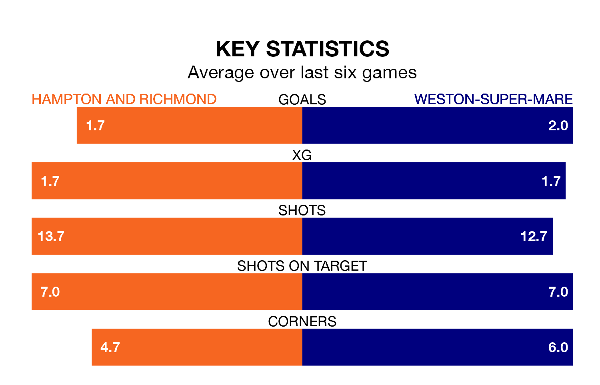

Weston-super-Mare travel to the Beveree Stadium for Saturday's match against Hampton and Richmond looking to bounce back from defeat last time out in National League North and South.
Weston-super-Mare, who sit zero in the league after 21 games, fell to a 3-2 home defeat to Truro City on December 16.
They face a Hampton & Richmond side who secured a draw in their last match, a 0-0 tie with Yeovil Town, and who sit fifth in the table.
With 34 goals in 22 games so far this season, Hampton & Richmond are scoring more than average in the league with 1.5 goals per game. And they are conceding fewer than average, letting in 27 goals at a rate of 1.2 per game.
Weston-super-Mare are also above average scorers, with 1.5 goals per game, compared to a league average of 1.4. They have conceded 1.6 goals per game.
The hosts are in reasonable form in National League North and South, with three wins and three draws from their last six games.
With four wins and two losses over that period, the away team's form is similar – they have both taken 12 points from 18.
Updated: 12:43, 20/12/23